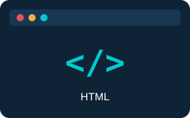

О странице
Эта страница сделана в рамках лабораторной работы №1 по курсу «Основы веб-технологий». На ней используются основные теги HTML: шапка, навигация, основное содержимое, разделы, списки, ссылки, изображение и подвал.

Инструменты
Для работы установлены:
- Git — система контроля версий;
- VS Code — редактор кода;
- FileZilla — FTP-клиент для выгрузки сайта на сервер;
- PuTTY — SSH-клиент;
- OpenVPN — доступ к сети университета.
Команды
Команды терминала:
cd— перейти в папку;ls— показать содержимое папки;mkdir— создать папку;pwd— показать текущую папку;cp— скопировать файл;rm— удалить файл.
Команды Git:
git init— создать репозиторий;git add— добавить изменения в индекс;git commit— зафиксировать изменения;git push— отправить коммиты в удалённый репозиторий;git clone— скопировать удалённый репозиторий.
План курса
- Структура HTML-документа.
- Вёрстка страницы по макету.
- Основы CSS.
- Блочная модель и позиционирование.
- Flexbox и Grid.
Справочник по тегам HTML: MDN Web Docs.